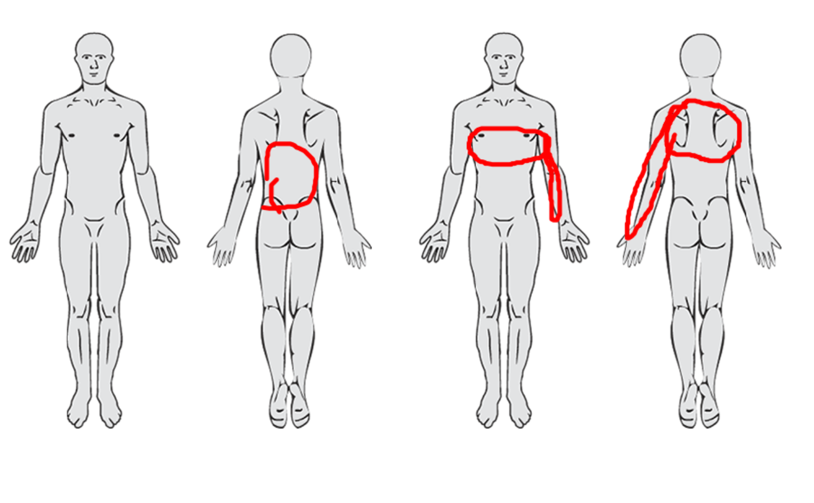
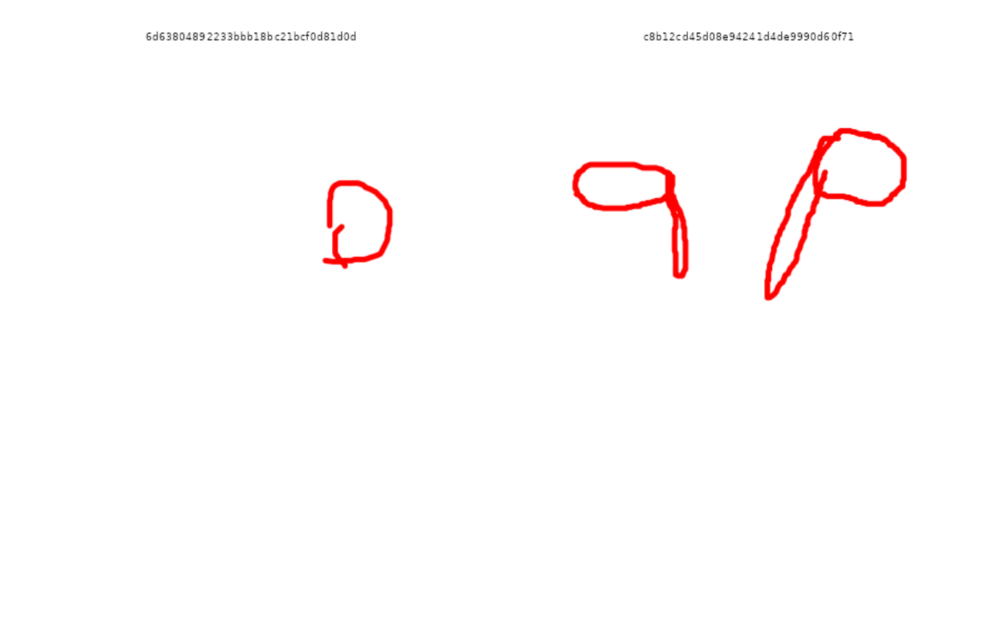
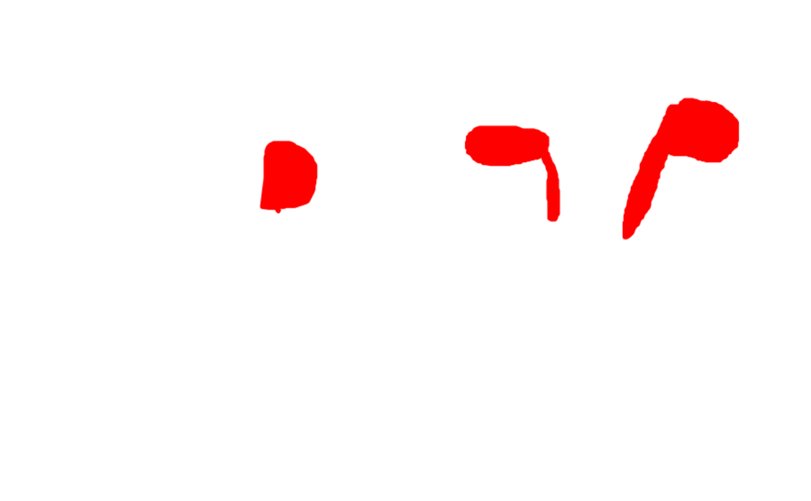
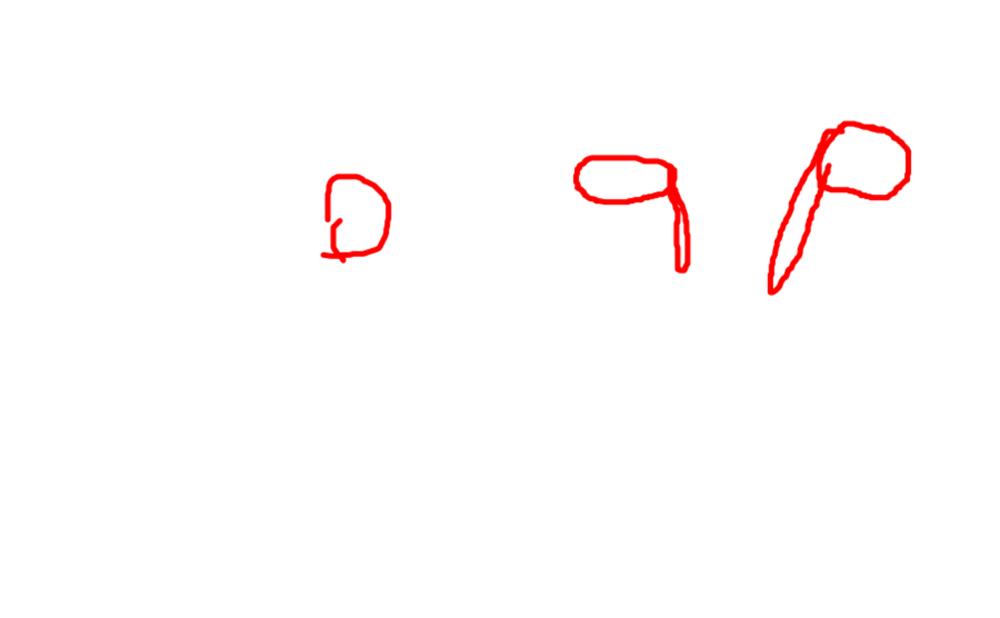

Renders stroke and spray data from a pain drawing tibble into a ggplot,
optionally composited with a background image. When rasterize = TRUE
(default), the plot is rasterized and returned as a pixel-accurate raster
layer — preserving exact canvas proportions. When
rasterize = FALSE, the raw ggplot with vector strokes is returned instead.
Usage
pdr_plot_xy(
.data,
pdr_col = pdr_data,
background_image = NULL,
include_id = FALSE,
rasterize = TRUE,
method = "memory",
clean_up = TRUE,
polygon = "none"
)Arguments
- .data
A pdr_tibble (see
pdr_match()) whose pdr_drawings contain an.rgbaelement. Add it first withpdr_add_rgba().- pdr_col
The pdr_list column in
.dataholding the pain drawings (tidy-eval, unquoted). Defaults topdr_data.- background_image
Optional background drawn beneath each drawing. Either a path to a PNG file (character string ending in
.png) or a numeric raster array as returned bypng::readPNG(). IfNULL(default), no background is drawn. Usepdr_example_file()to get the path to a bundled background.- include_id
Logical. If
TRUE, the.idof each drawing is shown as a facet strip label above each panel. Default isFALSE.- rasterize
Logical. If
TRUE(default), the plot is rasterized and returned as a new ggplot withggplot2::annotation_raster(). The output is pixel-accurate with a locked aspect ratio. IfFALSE, the raw ggplot with vector strokes is returned.- method
Character. Controls the rasterization back-end. Either:
"memory"(default) — renders in-memory viaragg::agg_capture(), no temp file is written to disk."file"— saves to a temporary PNG viaggplot2::ggsave()and reads it back withpng::readPNG(). Use this if the"memory"path is slow.
- clean_up
Logical. If
TRUE(default), the temporary PNG file is deleted on exit. Only relevant whenmethod = "file". Set toFALSEto retain the file for debugging.- polygon
Character. Controls whether strokes are rendered as filled polygons instead of their original appearance. One of:
"none"(default) — pen strokes as paths, spray strokes as points."pen"— pen strokes as filled polygons."spray"— spray strokes as filled polygons."both"— both pen and spray strokes as filled polygons.
Value
A ggplot2::ggplot() object. When rasterize = TRUE, the plot
contains a single ggplot2::annotation_raster() layer with a locked
aspect ratio. When rasterize = FALSE, the plot contains vector stroke
layers and supports further ggplot2 additions.
Details
Multiple drawings are arranged with ggplot2::facet_wrap(). A warning is
issued when more than 9 drawings are passed, as rendering may be slow.
Missing drawings (NA or NULL entries in the list-column) are dropped
with a warning; an error is raised only if no drawings remain.
See also
pdr_import_json() to read pain drawing JSON files,
pdr_plot_rgba() to plot rasterised drawings, pdr_add_rgba() to store
raster arrays in a pdr_list, pdr_match() for the pdr_tibble definition.
Examples
bg <- pdr_example_file("bg_full_body.png")
pd <- pdr_example_data[1:2, ]
# Default: in-memory rasterization with a background image
pdr_plot_xy(pd, background_image = bg)

# \donttest{
# File-based rasterization
pdr_plot_xy(pd, method = "file")
 # Vector output -- can add further ggplot layers
pdr_plot_xy(pd, rasterize = FALSE)
# Show id labels in facet strips
pdr_plot_xy(pd, include_id = TRUE)
# Vector output -- can add further ggplot layers
pdr_plot_xy(pd, rasterize = FALSE)
# Show id labels in facet strips
pdr_plot_xy(pd, include_id = TRUE)

# Draw strokes as filled polygons
pdr_plot_xy(pd, polygon = "both")

# Use a custom list-column name
pd2 <- dplyr::rename(pd, my_col = pdr_data)
pdr_plot_xy(pd2, pdr_col = my_col)

# }